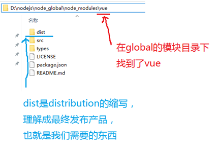
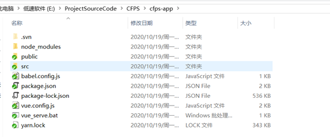
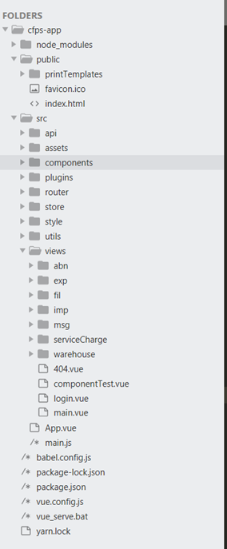
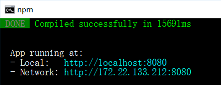
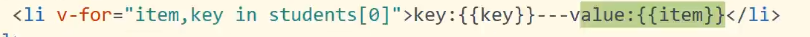
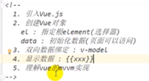
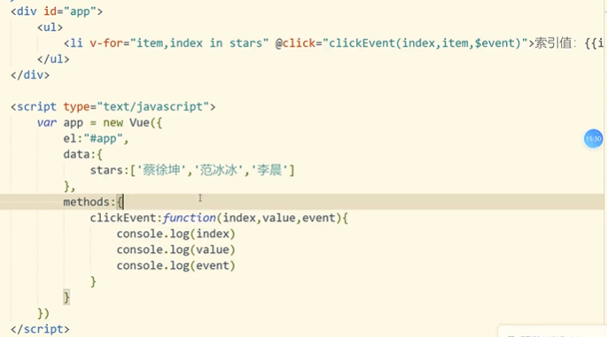
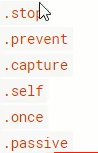
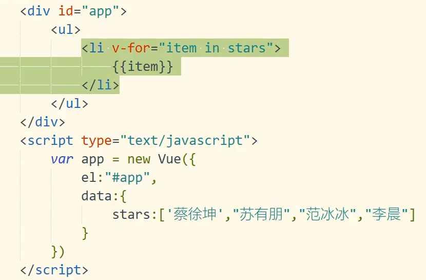

第1章：安装与使用
1：安装
先安装nodejs
安装npm，但是npm有点慢，安装淘宝镜像cnpm
#查看版本
$npm -v
# 升级或安装 cnpm
npm install cnpm -g
# 安装VUE：
npm install -g vue-cli
使用

安装vue-router
npm install vue-router –g
2：运行项目
1：从某处download下一个项目，项目结果大体如下


目录说明：
1：assets——静态资源，如css，js
2：components——公共组件
（一些可复用，非独立的页面），当然开发者也可以在 components 中直接创建完整页面。
3：router——路由文件
4：App.vue——根组件
一个vue页面通常由三部分组成:模板(template)、js(script)、样式(style)
5：main.js——入口文件
main.js主要是引入vue框架，根组件及路由设置，并且定义vue实例。
6：node_modules
这个目录存放的是项目的所有依赖，即 npm install 命令下载下来的文件
7：src 这个目录下存放项目的源码，即开发者写的代码放在这里
8：package.json 中定义了项目的所有依赖，包括开发时依赖和发布时依赖
2：进入项目目录cd XXX，执行npm install等待安装所需要的依赖，依赖安装完成，新增node_modules模块
3：运行
npm run serve

测试，调试环境：
引入：
<!-- 开发环境版本，包含了有帮助的命令行警告 -->
<script src="https://cdn.jsdelivr.net/npm/vue/dist/vue.js"></script>
使用
视图
<div id="app">
<!--插入模板变量-->
</div>
实例化一个对象
var app = new Vue({
在什么元素上使用
el: '#app',
模型
data: {
message: 'Hello Vue!'
}
})
这种方法其实是找到之后然后替换，但是这样性能不好很容易就看到模板的内容，为解决使用vue-cli编译的方法
1.1：Vue 核心
1.1.1 Vue 的基本认识
1) 英文官网: https://vuejs.org/
2) 中文官网: https://cn.vuejs.org/
1.1.2. 介绍描述
1) 渐进式 JavaScript 框架：需要什么加什么库
2) 作者: 尤雨溪(一位华裔前 Google 工程师)
3) 作用: 动态构建用户界面
1.1.3. Vue 的特点
1) 遵循 MVVM 模式
2) 编码简洁, 体积小, 运行效率高, 适合移动/PC 端开发
3) 它本身只关注 UI, 可以轻松引入 vue 插件或其它第三库开发项目
1.1.4. 与其它前端JS框架的关联
1) 借鉴 angular 的模板和数据绑定 数据绑定技术
2) 借鉴 react 的组件化和虚拟DOM 技术
1.1.5. Vue 扩展插件
1) vue-cli: vue 脚手架2
) vue-resource(axios): ajax 请求
3) vue-router: 路由
4) vuex: 状态管理
5) vue-lazyload: 图片懒加载
6) vue-scroller: 页面滑动相关
7) mint-ui: 基于 vue 的 UI 组件库(移动端)
8) element-ui: 基于 vue 的 UI 组件库(PC 端)
响应式数据原理：
对象内部通过defineReactive方法，使用Object.defineProperty将属性进行劫持（只会劫持已经存在的属性）数组则是通过重写数组方式来实现的
initData：初始化用户传入的data数据
new Observer：将数据进行观测
this.walk(value)：进行对象的处理
defineReactive：循环对象属性定义响应式变化
Objet.defineProperty：使用Object.defineProperty重新定义数据
理解MVVM

省略了原本MVC中的Controller，VUE帮忙做了
页面——————VM——————data
MVVM：
Model模型，数据对象
View：视图，模板对象
viewModel：视图模型（Vue的实例）
vue在Augular和React的基础上实现的。实现了双向的数据绑定，利用虚拟DOM实现快速渲染。

1.2：Vue的基本使用

<div id="app">
<input type="text" v-model="username">
<p>Hello, </p>
</div>
<script type="text/javascript" src="../js/vue.js"></script>
<script type="text/javascript">
//创建vue实例
new Vue({//配置对象
el: '#app',//element:选择器
data: {//数据Model
username: 'atguigu'
}
}）
</script>
Vue插件工具
1.3模板语法
1.3.1. 双大括号表达式
1) 语法:
2) 功能: 向页面输出数据
3) 可以调用对象的方法
1.3.2.指令一: 强制数据绑定
1) 功能: 指定变化的属性值
2) 完整写法: v-bind:xxx='yyy' //yyy 会作为表达式解析执
3) 简洁写法: :xxx='yyy'
1.3.3. 指令二: 绑定事件监听
1) 功能: 绑定指定事件名的回调函数
2) 完整写法:
v-on:keyup='xxx'
v-on:keyup='xxx(参数)'
v-on:keyup.enter='xxx'
3) 简洁写法:
@keyup='xxx'
@keyup.enter='xxx'
state
state(vuex) ≈ data (vue)
vuex的state和vue的data有很多相似之处,都是用于存储一些数据,或者说状态值.这些值都将被挂载 数据和dom的双向绑定事件,也就是当你改变值的时候可以触发dom的更新.
虽然state和data有很多相似之处,但state在使用的时候一般被挂载到子组件的computed计算属性上,这样有利于state的值发生改变的时候及时响应给子组件.如果你用data去接收$store.state,当然可以接收到值,但由于这只是一个简单的赋值操作,因此state中的状态改变的时候不能被vue中的data监听到,
mapState
当一个组件需要获取多个状态时候，将这些状态都声明为计算属性会有些重复和冗余。为了解决这个问题，我们可以使用 mapState 辅助函数帮助我们生成计算属性，让你少按几次键
在使用mapState之前,要导入这个辅助函数.
import { mapState } from 'vuex'
...mapState
...对象展开符的扩展
1.4：计算属性和监视
1.4.1计算属性
在computed属性对象中定义计算属性的方法。在页面中使用来显示计算的结果
会将计算的结果进行缓存
<div>
<!--一般情况-->
<h1>
NaN
</h1>
<!--计算属性-->
<h1>
</h1>
</div>
data:{
firstname:"zhang",
lastname:"san"
},
computed:{
fullname:function(){
console.log(this)
//会将计算的结果进行缓存,只要变量不改变就不会重新计算
return this.firstname + this.lastname
}
}
1.4.3侦听器
通过通过vm对象的$watch()或watch配置来监视指定的属性。当属性变化时，回调函数自动调用，在函数内部进行计算
内联操作
事件绑定
事件传参

事件修饰符

stop：阻止冒泡
prevent：阻止默认的事件
计算属性高级
通过gette r/setter实现对属性数据的显示和监视
计算属性存在缓存，多次读取只执行一次getter计算
<div id=”demo">
姓:<input type="text" placeholder="First Name" v一model="firstName"></br>
名:<input type="text" placeholder="Last Name" v一model="lastName"></br>
姓名1(单向):<input type="text" placeholder="Full Name" v-model="fullNamel"></br>
姓名2(单向):<input type="text" placeholder="Full Name" v-model="fullName2"></br>
姓名3(双向):<input type="text" placeholder="Full Name2" v-model="fullName3"></br>
</div>
<script type="text/javascript" src=”../js/vue.js"></script>
<script type="text/javascript">
var vm=new Vue({
e1:'#demo',
data:{
firstName:’Kobe’，
lastName: ’bryant
fullName2:’Kobebryant’
}，
//fullnamel虽然用了三次，但只执行一次---有缓存
//初始化显示/相关的data属性数据发生改变
//计算属性的一个方法，方法的返回值作为属性值
computed:{
fullName：function(){
return this.firstName+””+this.lastName
}，
fullName3:{//回调函数，计算并返回当前属性的值
get:function(){
return this.firstName+””+this.lastName
}，
//回调函数，你定义的,你没有调用，它执行了，
set:function(value){ //当需要读取当前属性值时回调
var name=value.split(’’)
this.firstName=names[0]
this.lastName=names[1]
//当属性值发生改变时回调
}
}
}，
//监视，当lastname发生变化，执行function
watch:{
lastName:function(newVal, o1dVa1){
this.fullName2=this.firstName+”+newVal
}
}
})
vm.$watch(’firstName’，function (val){
this.fullName2=val+’ ’+this.lastName
})
1.5 class与style绑定
·classA{
color:red;
}
·classB{
background:blue;
}
·classC{
font一size:20px;
}
1.6:条件渲染
vue隐藏组件
v-if
用于条件性地渲染一块内容，确保条件快内的事件监听器和子组件适当的被销毁和重建
v-else
v-if与v-else之间不能有其他元素
v-show
元素始终会被渲染保留在DOM中，只是通过v-show的取值是true还是false简单的切换元素的CSS属性display
反复切换的内容使用v-show
只是渲染一次的用v-if
绑定点击事件
<button @click="showPanel"></button>
……
methods:{
showPane:function(e){
}
}
……
1.7：列表渲染
v-for

模板方法
v-once
只插入一次，不再修改
v-html
插入html代码
不能插入脚本
xss攻击，利用这种进行xss攻击
v-bind:id=“tname”
可以省略为:id = "tname"
模板语言表达式应用
NaN
v-on绑定事件
v-on:@click等同与@click
class绑定::class='xxx'
表达式是字符串:'classA'
表达式是对象:{classA:isA, classB:isB}
表达式是数组:[’classA'，’ classB’]2. style绑定
</div>